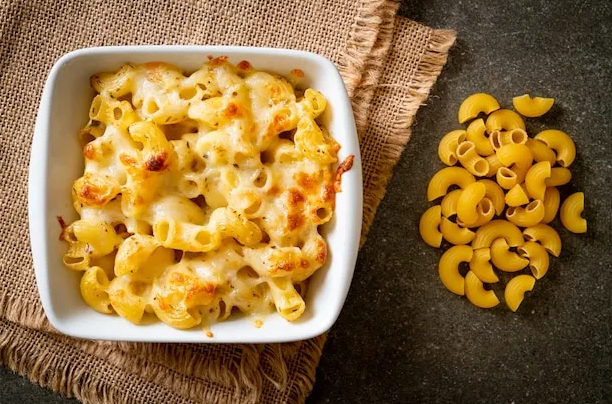

Ingredients
-
4 ounces elbow macaroni
-
4 ounces cubed processed cheese food
-
2 fluid ounces milk
-
¼ teaspoon ground black pepper
Directions
- Bring a large pot of lightly salted water to a boil. Cook elbow macaroni in the boiling water, stirring occasionally, until tender yet firm to the bite, 8 to 10 minutes; drain.
- Place a saucepan over medium-low heat; add cheese , milk, and black pepper. Cook until cheese has melted, stirring frequently. Stir in drained macaroni until evenly coated.